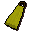
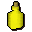
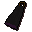

Cape

| Config name | yellow_cape |
| Item id | 1023 |
| Value | 32 gp |
| Weight | 1lb |
| Members | No |
| Tradeable | Yes |
| Stackable | No |
| Equip slot | back |
| Options | Wear |
| Defined in | scripts/skill_crafting/configs/dye_cape/capes.obj |
| Equipment stats | Slash def 1, Crush def 1, Range def 2 |
Cape
A thick yellow cape.
How to make
| Skill | Level | XP | Ingredients | Tool | How | Where | Makes |
|---|---|---|---|---|---|---|---|
| Crafting | 1 | 2.5 |  Yellow dye, Cape | use on item | 1 any coloured cape can be re-dyed, not just the plain one |
Sold at
| Shop | Shopkeeper | Stock |
|---|---|---|
| Barkers' Habidashery | 5 | |
| Fancy Clothes Store | 1 |
Referenced in scripts
scripts/_test/scripts/cheats/cheat_bank.rs2scripts/skill_crafting/scripts/dye_cape/dye_cape.rs2